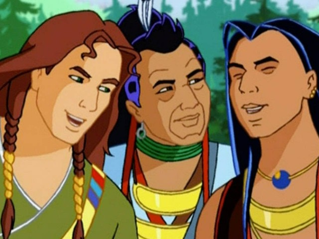

A mysterious guide. An unexpected route.
Can you find the truth before you follow?

Около 30 минут после просмотра серии (сам просмотр сюда не входит): 1 — 3 мин; 2 — 6 мин; 3 — 5 мин; 4 — 6 мин; 5 — 5 мин; 6 — 5 мин. Игра рассчитана на совместный урок: обсуждение и запись в тетрадь входят в это время. Переходы свободные; завершение устных заданий подтверждает преподаватель. Ошибки не отнимают очки. Ответы сохраняются только в этом браузере, если он разрешает локальное сохранение.
Сюжетная основа: описание серии 2 «Magua» Mondo TV. Тексты адаптированы, это не цитаты из мультфильма. Этапы 5 и 6 — придуманные ситуации по мотивам серии. Сначала посмотрите серию; краткое содержание доступно в миссии 1. В миссии 5 нужно задать по три вопроса обоим проводникам. Вежливый ответ сам по себе не доказывает, что путь безопасен: обсудите проверку карты и решение группы. Описание эпизодов. Имена Magua / Magwa встречаются в разных версиях.
Ключи: vocabulary — get lost, shortcut, tells the truth, lead the way, trust, find out. Case file — true, false, false, true, false. Past report — sent, met, offered, found out, ran away. Домашка: нарисовать два маршрута, подписать 3 места и написать “I choose this route because…”
Unofficial educational activity. Series artwork © Mondo TV / Rai Fiction. Image sources.